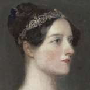
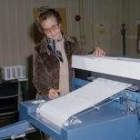

Profiles
Empowering women to break barriers, challenge expectations, share their ideas, and shape a more innovative future through STEM.


The women featured on this page each made a lasting contribution to STEM. Ada Lovelace is recognised for her early ideas about computer programming, Katherine Johnson used mathematics to support major NASA missions, Grace Hopper helped develop some of the foundations of modern computer programming, and Hedy Lamarr co-developed technology that contributed to the development of modern wireless communication.
1. Ada Lovelace
Ada Lovelace was an English mathematician who is widely regarded as one of the first computer programmers. She worked with Charles Babbage on his proposed Analytical Engine, a mechanical machine designed to carry out calculations. While translating an article about the machine, Lovelace added her own detailed notes, including an algorithm that could be processed by the Analytical Engine. This was significant because she recognised that a machine could potentially be used for more than simply calculating numbers.

.png)
2. Katherine Johnson
Katherine Johnson was an American mathematician whose calculations played an important role in the United States space programme. She worked at NASA and was responsible for checking and calculating flight paths for several important missions. Her mathematical work helped ensure that astronauts could travel safely through space and return to Earth. Johnson became particularly well known for her work on John Glenn's 1962 orbital mission. Glenn reportedly asked for Johnson to personally check the calculations produced by the new electronic computer before he flew. Her accuracy and mathematical ability helped build confidence in the calculations being used for the mission.

3. Grace Hopper
Grace Hopper was an American computer scientist and United States Navy officer who made major contributions to the development of computer programming. She worked on some of the earliest computers and helped develop the idea of using programming languages that were closer to human language rather than requiring programmers to work entirely with machine code. Hopper was involved in the development of COBOL, a programming language designed to make computer programs more accessible and useful for businesses and organisations. She also became known for promoting the idea that computers should be easier for people to program and use.
4. Hedy Lamarr
Hedy Lamarr was an Austrian-born inventor and actress who co-developed a frequency-hopping communication system with composer George Antheil during World War II. Their invention was designed to make it more difficult for radio-controlled signals to be intercepted or disrupted. Although the technology was not immediately put into widespread use, the principles behind frequency-hopping later became relevant to the development of wireless communication technologies. This makes Lamarr an interesting example of someone whose work had an impact beyond the field she was most publicly known for. Lamarr's contribution also challenges the assumption that someone's career or public identity defines what they are capable of achieving. Her work as an inventor demonstrates the importance of recognising skills and ideas regardless of a person's background or profession.
Quick Links:
Social Media:
User: Women_in_STEM01
Link:
https://www.instagram.com/
User: Women_in_STEM01
Link:
https://www.facebook.com/
User: Women_in_STEM01
Link:
https://www.tiktok.com/